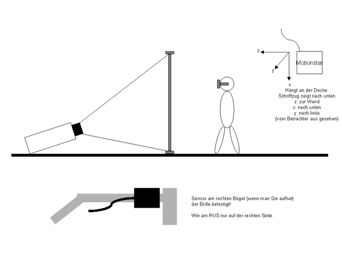

COVER Configuration for the VR Wall of the CENIT Systemhaus AG

Transmitter
The Transmitter is mounted on the ceiling wall with x-axis down and y-axis left, z axis in
Receiver
The Receiver is mounted in the right side of the stereo glasses, cable backwards.
Mouse
The stick developed by IAO Fraunhofer.
Screen
Wall size is 2840 x 2120 mm. The resolution is 1280x1024.
covise.config
COVERConfig
{
MODULE VRModuleDesk
MODULE VRViewPoint
MODULE ClipPlane
MENU_POSITION 900 0 800
MENU_ROTATION 0 0 0
ARENA_SIZE 500000000
TRACKING_SYSTEM FLOCK
SCENESIZE 2000
NUM_PIPES 1
NUM_WINDOWS 1
AUTO_WIREFRAME OFF
COORD_AXIS OFF
FREEZE OFF
#SPOTLIGHT ON
STEREO_SEPARATION 60
NOSEPARATION FALSE
TWOSIDE ON
LIGHT1 0 10000 10000 1.0
MOVE_PARTS OFF
WELCOME_MESSAGE Welcome to COVISE-VR
LOD_SCALE 0
}
# the micc mouse
ButtonConfig
{
BUTTON_DEVICE /dev/ttyd2
}
WindowConfig:
{
# WinNo WinName SoftPipeNo Origin[pixel] Size [pixel]
0 FRONT 0 0 0 1280 1024
}
PipeConfig:
{
# SoftPipe HardPipe Display
0 0 :0.0
}
ScreenConfig:
{
# ScreenNo ScreenName ScreenSize[mm] ScreenCenter[mm] ScreenOrient hpr [degrees]
0 FRONT 2840 2120 0 0 0 0.0 0.0 0.0
}
# It is an ascension motionstar with ERT
# but this version of COVER needs a PolhemusConfig ;-)
#
# AscensionConfig ...
PolhemusConfig
{
HAND POLHEMUS_STYLUS 1
HEAD POLHEMUS_SENSOR 0
LINEAR_MAGNETIC_FIELD_CORRECTION 0.0 0.0 0.0
# Transmitter mounted on the ceiling x=down, z=in, y=left
TRANSMITTER_OFFSET_POS 15 -230 102
TRANSMITTER_OFFSET_EULER 90 0 90
# sensor at the right side cable backwards
SENSOR_OFFSET_POS 8 0 8
SENSOR_OFFSET_EULER -90 0 90
# micc mouse
STYLUS_OFFSET_POS 0 0 0
STYLUS_OFFSET_EULER 90 0 0
}
FlockConfig:
{
IP_ADDRESS xxx.xxx.xxx.xxx
}